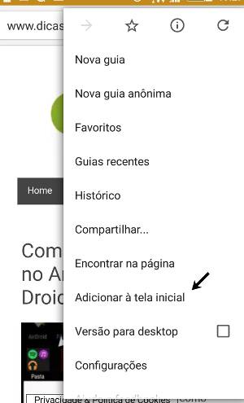
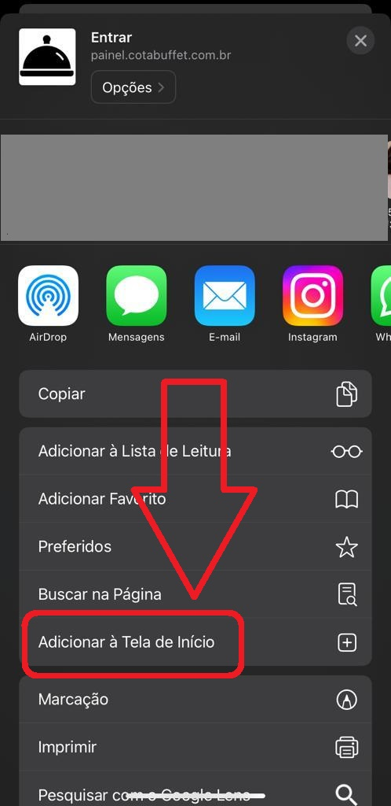

Para realizar a instalação, clique nas configurações do seu navegador e selecione a opção "Adicionar à tela inicial".
Veja abaixo um exemplo do navegador Chrome em um dispositivo Android:
E abaixo um exemplo no navegador Safari, em um dispositivo iOS:
